| STAGE 8-A Forest Labyrinth |
| 미로의 숲 |
| (일어판 - 迷いの森 : 미혹의 숲) |
구조를 모르면 상당히 해매게 되는 말 그대로 미로의 숲이다.
그만큼 상당히 많은 적을 만날 수도 있고 금방 빠져나갈 수도 있다.
만약 제대로 된 길을 찾지 못했다면 블랙 드래곤을 만나게 될 것이다.
(xp를 많이 얻고 싶다면 이 스테이지는 최적의 장소라 할 수 있다.)
그만큼 상당히 많은 적을 만날 수도 있고 금방 빠져나갈 수도 있다.
만약 제대로 된 길을 찾지 못했다면 블랙 드래곤을 만나게 될 것이다.
(xp를 많이 얻고 싶다면 이 스테이지는 최적의 장소라 할 수 있다.)
스테이지 구조
이곳은 아래와 같이 4가지 형태의 구역으로 나뉜다. 잘 기억 해 두기 바란다.| 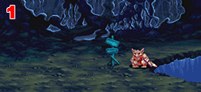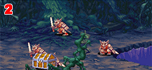 |
| 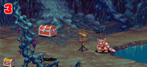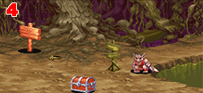 |
공통점이 있다면 끝부분이 두갈래로 나뉘어 있다. 어느쪽을 선택해서 가느냐에 따라 올바른 곳으로 갈 수도 있고 틀린 곳으로 갈 수도 있다. 그 옳고 그름을 판단하는 기준이 중간에 있는 팻말과 코볼드다.
스테이지가 시작되면 최초는 1번 구역에서 시작한다. 코볼드에게 접근하면 팻말을 부수고 웃다가 어느 한쪽으로 도망갈텐데 쫓아가면 2번 구역이 나오고 반대로 가면 다시 1번 구역이 나온다.
2번 구역에서 코볼드를 쫓아가면 3번 구역이 나오고 반대로 가면 1번 구역으로 되돌아간다.
3번 구역에서 코볼드를 쫓아가면 4번 구역이 나오고 반대로 가면 1번 구역으로 되돌아간다.
마지막 4번 구역에서 코볼드를 쫓아가면 숲을 나가게 되고 반대로 가면 1번 구역으로 되돌아간다.
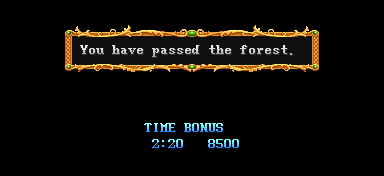
숲을 통과했다는 글과 함께 시간 보너스를 받는다.
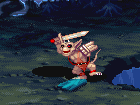
그런데 때때로 팻말의 잔해가 남아있는 경우가 있다.이 경우 결과가 반대로 되어버린다.
1번 구역에서 코볼드를 쫓아가면 1번 구역으로 되돌아가고
반대로 가면 2번 구역이 나온다.
2번 구역에서 코볼드를 쫓아가면 1번 구역으로 되돌아가고 반대로 가면 2번 구역으로 간다.
3번 구역에서 코볼드를 쫓아가면 1번 구역으로 되돌아가고 반대로 가면 3번 구역으로 간다.
4번 구역에서 코볼드를 쫓아가면 1번 구역으로 되돌아가고 반대로 가면 숲을 나가게 된다.
숲에서 빠져 나가려면 팻말조각이 없으면 코볼드를 쫓아가고 팻말조각이 있으면 코볼드의 반대방향으로 가면 되는 것이다.
ps. 코볼드가 팻말을 부수고 웃을 때 가려는 방향으로 약간 이동한다.
그렇다고 숲을 나가는 방향과 반대로만 가면 무한대로 돌 수 있느냐? 하면 그것은 아니다.
반대로 가면 1번 구역으로 돌아간다는 것은 알았을 것이다. 1번 구역을 4번 거치고 나서 다시 1번 구역으로 가는 방향으로 갔다면 제대로 된 길을 못찾았다는 것에 대한 벌칙으로 '페널티 스테이지'를 맞이하게 된다. 이 페널티 스테이지에는 바로 '블랙 드래곤'이 등장한다.
블랙 드래곤을 만나려면 팻말조각이 없으면 코볼드의 반대방향으로 가고 팻말조각이 있으면 코볼드를 쫓아가면 된다.
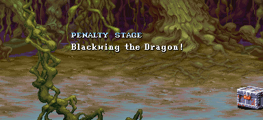
블랙 드래곤은 '미로의 숲'의 보스라기 보다는 '벌칙 스테이지에서 만나는 몬스터'다.
다시 정리 해 보자.
2, 3. 4번 구역은 올바른 길로써 차례로 지나가면 숲을 나가는 것이다. 그래서 숲에서 빠져 나가려면 팻말조각이 없으면 코볼드를 쫓아가고 팻말조각이 있으면 코볼드의 반대방향으로 가면 된다.
1번 구역으로 돌아갔다면 틀린 길로 가는 것이고 따라서 블랙 드래곤을 만나려면 위와 반대로 팻말조각이 없으면 코볼드의 반대방향으로 가고 팻말조각이 있으면 코볼드를 쫓아가면 된다.
숲을 최대한 빨리 빠져 나가려면 1 → 2 → 3 → 4 순으로 가서 마지막 4번 구역에서 팻말 조각이 없으면 코볼드를 쫓아가고 있으면 반대로 가면 된다.
블랙 드래곤을 최대한 빨리 만나려면 1 → 1 → 1 → 1 순으로 가서 마지막 1번 구역에서 팻말 조각이 없으면 코볼드의 반대로 가고 있으면 쫓아가면 된다.
미로의 숲을 최대한 오래 돌아다니고 싶으면 1 → 2 → 3 → 4 → 1 → 2 → 3 → 4 → 1 → 2 → 3 → 4 → 1 → 2 → 3 → 4 순으로 가면 된다.
시간 보너스?
보스의 시간 보너스와 마찬가지로 실제시간의 1초가 여기서는 2초다.| 0:30 18000 0:40 17000 0:50 16000 1:00 15000 |
2:10 9000 2:20 8500 2:30 8000 2:40 7500 2:50 7000 3:00 6500 |
4:10 3000 4:20 2500 4:30 2000 4:40 1500 4:50 1000 5:00 500 |
보다시피 보너스는 10초단위로 끊어지며 1:10~2:00, 3:10~4:00는 존재하지 않는다.
그런데 어쩌피 xp를 많이 얻으려면 적들과 최대한 많이 싸워야 하고 무엇보다 블랙 드래곤과 싸워야 하니 별 의미는 없는 보너스다.
첫번째 구역 |
미로의 숲...... 올바른 길로 가지 않는다면 시작 지점으로 되돌아 갈 것이다.
(일어판)
違った道進むと最初にいた所に戾されてしまう...それが迷いの森...。
길을 잘못 들면 처음 장소로 돌아가 버린다......그것이 미로의 숲.....
ps. 최초 스테이지 시작시에만 나오는 문구다.
2,3,4번으로 갔다면 올바른 길로 간 것 이라서 숲을 빠져나갈 수 있고
1번으로 되돌아 왔다면 틀린 길로 간 것 이라서 다시 숲을 해매야 한다.
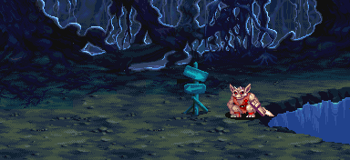
이 구역은 고블린과 아울베어가 나온다.
등장하는 적 - 약 40초가 지나면 도망간다.
| 1인 | 배경에서 고블린 x3 → 한마리만 남으면 아래쪽에서 고블린 x3 → 두마리만 남으면 왼쪽에서 아울베어 x2 → 총 두마리만 남으면 왼쪽에서 돌팔매질 고블린 x4 → 총 한마리만 남으면 왼쪽에서 오일 고블린 x4 → 왼쪽에서 오일 고블린 x4 → 전부 제거하면 처음부터 한번 더 반복 |
| 2인 | 1인 플레이와 똑같다. |
| 3인 | 배경에서 고블린 x3 → 한마리만 남으면 아래쪽에서 고블린 x3 → 두마리만 남으면 왼쪽에서 아울베어 x3 → 총 두마리만 남으면 왼쪽에서 돌팔매질 고블린 x4 → 총 한마리만 남으면 왼쪽에서 오일 고블린 x4 → 왼쪽에서 오일 고블린 x4 → 전부 제거하면 처음부터 한번 더 반복 |
| 4인 | 3인 플레이와 똑같다. |
두번째 구역 |
이곳은 코볼드와 액스 놀, 보우 놀이 나오는 구역이다.
이곳의 상자를 시프/매직 유저/엘프가 열 경우 힐링 포션이 나오니 HP를 회복하는 용도로 들르는 것도 괜찮다.
코볼드와 앞쪽의 나무줄기에 가려서 팻말이 잘 안보일 수 있으니 줄기가 가리지 않는 위치를 찾아보는 것이 나을 수도 있다.
보우 놀이 많이 나오기 때문에 화살로 많은
xp를 얻을 수 있기도 한 곳이다 (특히 엘프).
| 랜덤 아이템 | 고정 아이템 | 클래스별 아이템 | |||||||
|
|||||||||
| 드워프가 격파시 | |||||||||
| ??? |
등장하는 적 - 약 40초가 지나면 도망간다.
| 1인 | 코볼드 x3 → 한마리를 제거하면 공중에서 액스 놀 x3 → 총 한마리만 남으면 왼쪽 아래에서 보우 놀 x4 → 전부 제거하면 왼쪽 위에서 보우 놀 x4 → 왼쪽에서 코볼드 x1 + 오른쪽에서 코볼드 x2 → 액스 놀부터 보우 놀까지 한번 더 반복 |
| 2인 | 1인 플레이와 똑같다. |
| 3인 | 1인 플레이와 똑같다. |
| 4인 | 1인 플레이와 똑같다. |
보우 놀 잡을 때 팁? 스테이지를 위아래로 절반으로 나눠서 아래쪽에 있으면 보우 놀도 좀 더 아래쪽에서 나오고 위쪽에서 있으면 마찬가지로 좀 더 위쪽에서 나온다. 아래쪽에서 나오는 녀석들이 더 아래쪽에서 나오면 가장 아래쪽 보우 놀(위쪽이라면 가장 위쪽 보우 놀)은 잡을 수 가 없으니 아래쪽 녀석들이 나올 땐 위쪽에 있어야(위쪽 녀석들이라면 아래쪽에) 4마리 전부 잡을 수 있다.
세번째 구역 |
이곳은 구울과 트로글로다이트, 헬 하운드가 나오는 구역이다.
가장 위험한 구역이니 조심하는게 좋다.
상자 B
| 랜덤 아이템 | 고정 아이템 | 클래스별 아이템 | |||||||
|
|||||||||
| 드워프가 격파시 | |||||||||
| ??? |
상자 C - 불/낙석/석화/트랩 없음 중 하나가 발동한다.
| 랜덤 아이템 | 고정 아이템 | 클래스별 아이템 | |||||||
|
|||||||||
| 드워프가 격파시 | |||||||||
등장하는 적 - 약 47초가 지나면 도망간다.
| 1인 | 왼쪽 아래 바닥에서 구울 x2 + 오른쪽 위 바닥에서 구울 x2 → 한마리만 남으면 왼쪽 위 바닥에서 구울 x2 + 오른쪽 아래 바닥에서 구울 x2 → 한마리만 남으면 공중에서 트로글로다이트 x2 → 총 두마리만 남으면 아래쪽에서 트로글로다이트 x2 → 총 두마리만 남으면 오른쪽에서 헬 하운드 x2 → 한마리만 남으면 오른쪽에서 자이언트 비틀 x1 → 처음부터 한번 더 반복 |
| 2인 | 1인 플레이와 똑같다. |
| 3인 | 왼쪽 아래 바닥에서 구울 x2 + 오른쪽 위 바닥에서 구울 x2 → 한마리만 남으면 왼쪽 위 바닥에서 구울 x2 + 오른쪽 아래 바닥에서 구울 x2 → 한마리만 남으면 공중에서 트로글로다이트 x3 → 총 두마리만 남으면 아래쪽에서 트로글로다이트 x3 → 총 두마리만 남으면 왼쪽에서 헬 하운드 x1 + 오른쪽에서 헬 하운드 x2 → 한마리만 남으면 오른쪽에서 자이언트 비틀 x1 → 처음부터 한번 더 반복 |
| 4인 | 3인 플레이와 똑같다. |
이곳에서 나오는 자이언트 비틀은 다른곳의 자이언트 비틀과는 색이 다르다.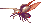
네번째 구역 |
이곳은 셰도우 엘프와 헬 하운드가 나오는 구역이다.
팻말 근처에는 네클리스가 놓여있다.
헬 하운드를 잡고 파이어 로드를 노려보는 것도 좋다.
* 팻말에 적혀있는 내용 *
If you wear the necklaces, you'll become more resustant to magic attacks.
목걸이를 착용한다면 마법공격에 대해 좀더 잘 견딜 것 이다.
- 적어도 아시아 버전에서는 전혀 효과가 없다.
상자 D
| 랜덤 아이템 | 고정 아이템 | 클래스별 아이템 | |||||||
|
|||||||||
| 드워프가 격파시 | |||||||||
| ??? |
등장하는 적 - 약 40초가 지나면 도망간다.
| 1인 | 오른쪽에서 셰도우 엘프 x3 → 한명만 남으면 왼쪽에서 헬 하운드 x1 + 오른쪽에서 헬 하운드 x1 → 둘만 남으면 오른쪽에서 창든 셰도우 엘프 x3 → 전부 제거하면 왼쪽에서 창든 셰도우 엘프 x3 → 왼쪽에서 창든 셰도우 엘프 x3 + 오른쪽에서 창든 셰도우 엘프 x2 → 왼쪽에서 헬 하운드 x1 + 오른쪽에서 헬 하운드 x2 → 둘만 남으면 셰도우 엘프부터 한번 더 반복 |
| 2인 | 1인 플레이와 똑같다. |
| 3인 | 오른쪽에서 셰도우 엘프 x3 → 한명만 남으면 왼쪽에서 헬 하운드 x1 + 오른쪽에서 헬 하운드 x2 → 둘만 남으면 오른쪽에서 창든 셰도우 엘프 x3 → 전부 제거하면 왼쪽에서 창든 셰도우 엘프 x3 → 왼쪽에서 창든 셰도우 엘프 x3 + 오른쪽에서 창든 셰도우 엘프 x2 → 왼쪽에서 헬 하운드 x1 + 오른쪽에서 헬 하운드 x2 → 둘만 남으면 셰도우 엘프부터 한번 더 반복 |
| 4인 | 3인 플레이와 똑같다. |
페널티 스테이지 |
| 보스 - 블랙 드래곤 (Black Dragon) | 50000xp | 25000xp |
패널티 스테이지 - 검은날개의 드래곤!
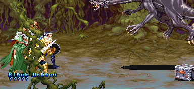
블랙 드래곤이 등장한다.
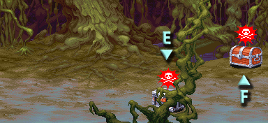
이 스테이지 오른쪽에 상자 두개가 있다.
상자 E - 불/석화 트랩 중 하나가 발동한다.
| 랜덤 아이템 | 고정 아이템 | 클래스별 아이템 | |||||||
|
|||||||||
| 드워프가 격파시 | |||||||||
| ??? |
상자 F - 낙석/트랩 없음 중 하나가 발동한다.
| 랜덤 아이템 | 고정 아이템 | 클래스별 아이템 | |||||||
|
|||||||||
| 드워프가 격파시 | |||||||||
간단한 공략 - 자세한 공략은 보스 공략을 보도록 한다. ▶ 보스 공략 보기
패턴과 특성만 놓고 보면 상당히 까다로운 보스다.
일반 공격이 잘 안먹히는 경우가 많고 또 공격을 당한 후 움찔 할 때는 무적이다.
게다가 덥치는 공격의 판정이 아주 넓고 공격 주문이 아닌 이상 막을 수 없다.
...그러나 초반부터 브레쓰를 내뿜기 때문에 아래로 파고들어서 충분히 공격할 수 있다.
준비해 둔 LB오일과 망치를 전부 던져서 상당한 데미지를 입힐 수 있고 이어서 공격을 계속 해 주면 블랙 드래곤은 브레쓰만 내뿜다가 끝난다. 드워프는 망치대신 대공기를 바로 써주는게 좋다.
원더 에그의 효과가 무척 좋다. 블랙 드래곤을 잡을 생각을 했다면 가져오는게 유리하다.
또한 위쪽 상자에서 종종 나오는 낙석 트랩도 유용하다. 낙석을 블랙 드래곤이 맞으면 상당한 데미지를 입기 때문이다. 물론 플레이어도 맞을 수 있으니 주의해야 한다.
매직 유저는 망치가 없어서 좀 까다로울 수 있을텐데 매직 미사일을 이용해서 데미지를 보충하도록 한다. 블랙 드래곤을 잡으면 레벨이 오르니 남은 주문을 맘껏 써도 된다.
라이트닝 로드와 라이트닝 완드가 있다면 앉아서 쓰면 상당히 효과가 좋다.
패턴과 특성만 놓고 보면 상당히 까다로운 보스다.
일반 공격이 잘 안먹히는 경우가 많고 또 공격을 당한 후 움찔 할 때는 무적이다.
게다가 덥치는 공격의 판정이 아주 넓고 공격 주문이 아닌 이상 막을 수 없다.
...그러나 초반부터 브레쓰를 내뿜기 때문에 아래로 파고들어서 충분히 공격할 수 있다.
준비해 둔 LB오일과 망치를 전부 던져서 상당한 데미지를 입힐 수 있고 이어서 공격을 계속 해 주면 블랙 드래곤은 브레쓰만 내뿜다가 끝난다. 드워프는 망치대신 대공기를 바로 써주는게 좋다.
원더 에그의 효과가 무척 좋다. 블랙 드래곤을 잡을 생각을 했다면 가져오는게 유리하다.
또한 위쪽 상자에서 종종 나오는 낙석 트랩도 유용하다. 낙석을 블랙 드래곤이 맞으면 상당한 데미지를 입기 때문이다. 물론 플레이어도 맞을 수 있으니 주의해야 한다.
매직 유저는 망치가 없어서 좀 까다로울 수 있을텐데 매직 미사일을 이용해서 데미지를 보충하도록 한다. 블랙 드래곤을 잡으면 레벨이 오르니 남은 주문을 맘껏 써도 된다.
라이트닝 로드와 라이트닝 완드가 있다면 앉아서 쓰면 상당히 효과가 좋다.
▶ 클리어 후 레벨이 올라가는 클래스 : 파이터, 시프, 매직 유저
상점 |
아이템 구입 가격
| ※ 아이템 교환 | 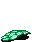 | → | 혹은 |
'드래곤의 비늘'을 가지고 있을 경우 상점 주인에게 말을 걸면 '드래곤의 방패'를 만들어 준다.
시프 / 매직 유저일 경우 '디스플레이서 클록'으로 바꿔준다.
좀 더 자세한 정보는 상점 정보를 보기 바란다. ▶ 상점 정보 보기
Copyright ⓒ 2007-2008 Crassus & Legon. All rights reserved.